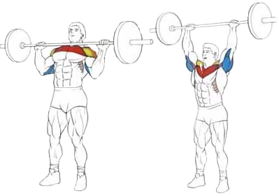

Исходное положение:
Стоя. Ноги на ширине плеч.
Взять снаряд прямым хватом на ширине плеч и поднять на уровень груди.
Техника выполнения:
Поднять снаряд вверх, делая выдох в конце подъема.
Сделать паузу и медленно на вдохе опустить штангу на уровень груди.
Рекомендации:
Не следует работать с предельным весом.
Спину рекомендуется слегка прогнуть.
Как вариант, можно выполнять это упражнение с гантелями.